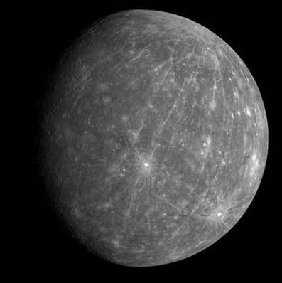
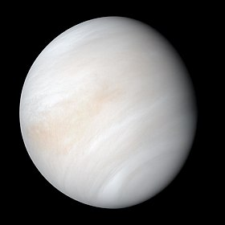

الأرض
الأَرْض هي ثالث كواكب المجموعة الشمسية بعدًا عن الشمس بعد عطارد والزهرة، وتُعتبر من أكبر الكواكب الأرضية وخامس أكبر الكواكب في النظام الشمسي، وذلك من حيث قطرها وكتلتها وكثافتها، ويُطلق على هذا الكوكب أيضًا اسم العالم

عطارد
عُطَارِد هو أصغر كواكب المجموعة الشمسية وأقربها إلى الشمس، أطلقت العرب على هذا الكوكب تسمية «عطارد»؛ وأصل الاسم من المصدر ط ر د، طارد ومطّرَد أي المتتابع في سيره، وأيضاً سريع الجري ومن هنا اسم الكوكب عطارد الذي يرمز إلى السرعة الكبيرة لدوران الكوكب حول الشمس.

الزهرة
الزُّهَرَة هو ثاني كواكب المجموعة الشمسية من حيث المسافة بينه وبين الشمس. يبعد الزهرة عن الشمس نحو 108 مليون كيلومتر، ومَدَارُه حول الشمس ليس دائريًا تمامًا، وهو كوكب ترابي مثل كوكبي عطارد والمريخ، وهو شبيه بكوكب الأرض من حيث الحجم والتركيب